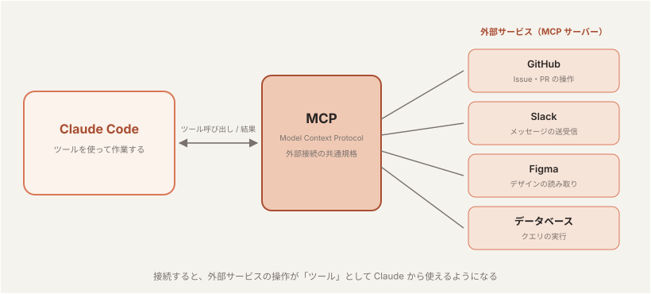
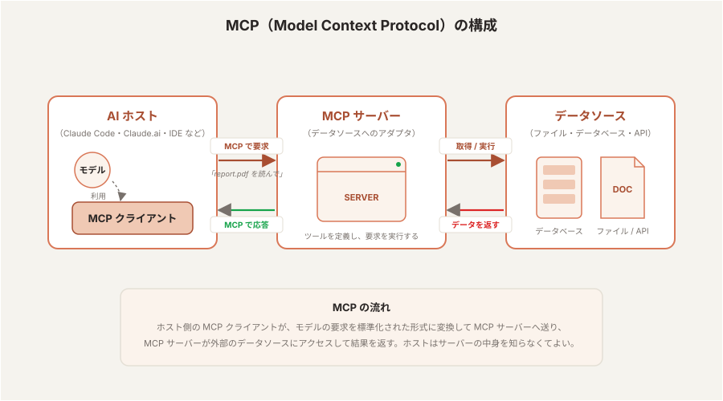
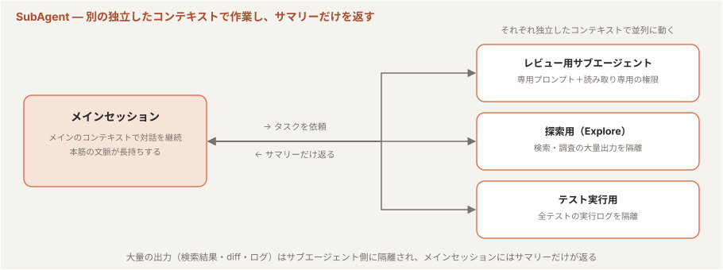
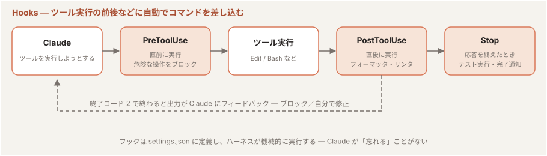
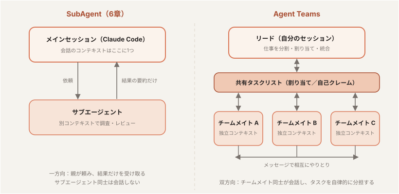
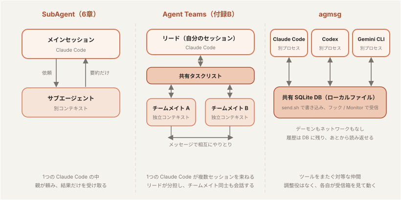

Section 2：Claude Code を使ったソフトウェア開発
「プロジェクト知識を Claude に定着させ、コード変更を安全に任せる」
1到達目標・時間配分
到達目標
CLAUDE.md・メモリ・settings.jsonの仕組みを理解し、設定が効いているかを確認できる- プラグインで機能を追加し、skill-creator で自作スキルを作れる
- コネクタ・MCP で外部サービス（Figma など）を接続し、デザインからコード生成の流れを理解する
- 題材の OSS（agmsg）への機能追加からレビュー・PR 作成まで、Claude Code との会話で完遂できる
時間配分（120分）
| # | 内容 | 時間 |
|---|---|---|
| 1 | オープニング（到達目標・時間配分の説明） | 6分 |
| 2 | 設定ファイルとメモリ（CLAUDE.md・settings.json・MEMORY.md） | 18分 |
| 3 | Skills とプラグイン | 18分 |
| 4 | コネクタ | 6分 |
| 5 | MCP | 12分 |
| 6 | SubAgent（サブエージェント） | 12分 |
| 7 | Hooks | 12分 |
| 8 | 実践：アプリ開発の一連フロー | 28分 |
| 9 | まとめ | 8分 |
2設定ファイルとメモリ：CLAUDE.md・settings.json・MEMORY.md（18分）
2-1. CLAUDE.md とは（4分）
- セッション開始時に 自動で読み込まれる プロジェクトの説明書
- 書くべきこと：ビルド・テストコマンド / コーディング規約 / ディレクトリ構成 / 注意事項
/initで雛形を自動生成できる
配置場所と優先順位
| 配置場所 | スコープ |
|---|---|
~/.claude/CLAUDE.md | 全プロジェクト共通（個人設定） |
<repo>/CLAUDE.md | プロジェクト共通（チームで共有） |
<repo>/CLAUDE.local.md | プロジェクト個人用（git 管理外） |
AGENTS.md は Cursor / GitHub Copilot / Gemini CLI など 30 以上の AI コーディングツールが共通で読む、ツール非依存の指示ファイルです（Markdown・リポジトリルート配置）。Claude Code はこれをネイティブでは読み込まず、CLAUDE.md だけを読みます。 複数ツールを併用するチームでは、指示を二重管理しないよう次の方法で橋渡しします:
- import：
CLAUDE.mdに@AGENTS.mdの1行を書いて取り込みます。Claude 固有のルールはCLAUDE.md側に足せます
参照：https://code.claude.com/docs/en/memory
演習1
CLAUDE.md の内容を確認する。まだ生成していなければ /init を実行する
CLAUDE.mdの内容を確認する（個人用とプロジェクトの両方を!catで表示する）!cat ~/.claude/CLAUDE.md !cat CLAUDE.md
CLAUDE.mdがまだ無い場合（/initが未実行）は、/initを実行して生成する
2-2. CLAUDE.md の書き方のコツ（4分）
- 簡潔に・宣言的に。長文の経緯説明より「○○するときは△△を使う」
- コードから読み取れること（ファイル構成そのもの等）は書かない — コンテキストの無駄
- 守られなかった指示は 表現を強める より 理由を添える ほうが効く
演習2
以下の記入例を参考に、CLAUDE.md に「テストコマンド」「コーディング規約」を追記する
claude を起動して依頼する:
$ claude
リポジトリのCLAUDE.mdファイルへ以下の記載を追記して
記入例（agmsg の場合）:
## テストコマンド - 全テスト実行: `bats tests/` - 単一ファイル: `bats tests/test_send.bats` - 静的解析: `shellcheck scripts/*.sh` ## コーディング規約 - シェルスクリプトは先頭で `set -euo pipefail` を宣言する - 変数展開は必ずダブルクォートで囲む（`"$var"`） - SQLite への値の埋め込みは文字列連結ではなくパラメータ化する - 新しいスクリプトには対応する bats テストを追加する
2-3. settings.json と設定の確認（8分）
パーミッション許可リスト・Hooks・環境変数など、ハーネスの動作設定 を JSON で定義する。
| 配置場所 | スコープ |
|---|---|
~/.claude/settings.json | ユーザ共通（全プロジェクトに適用） |
<repo>/.claude/settings.json | プロジェクト共通（チームで共有・コミット対象） |
<repo>/.claude/settings.local.json | プロジェクト個人用（git 管理外） |
Section 1 で settings.json の配置場所（user / project / local）に触れた。ここでは 書ける主な項目 と、設定が効いているかの確認方法 を押さえる。
主な設定キー
| キー | 役割 |
|---|---|
permissions | ツール実行の許可/拒否/確認（allow / deny / ask） |
hooks | ツール実行の前後に差し込むコマンド（7章） |
env | セッションに渡す環境変数 |
model | 既定モデル |
outputStyle | 応答スタイル |
enabledPlugins / extraKnownMarketplaces | プラグイン・マーケットプレイスの設定（3章） |
includeCoAuthoredBy | コミットに Co-Authored-By を付けるか |
cleanupPeriodDays | セッション履歴の保持日数 |
permissions は allow / deny / ask の3種で書く:
{
"permissions": {
"allow": ["Bash(bats:*)"],
"deny": ["Read(./.env)", "Bash(rm -rf *)"],
"ask": ["Bash(git push:*)"]
}
}
allow＝確認なしで許可 /deny＝実行不可 /ask＝毎回確認:*は末尾ワイルドカード。Bash(bats:*)はbats tests/test_send.batsのように後ろに何が続いても一致する（bashなど別コマンドは対象外）。**は複数階層のパスにマッチ- よく使う安全なコマンドを
allowに登録しておくと、承認ダイアログの往復が減ってテンポが上がる（承認時に「Yes, and don't ask again」を選ぶと自動追記される）
設定例：秘密ファイルの読み取りを禁止する
.claudeignore は無い。正しくは .claude/settings.json の permissions.deny で「読み取り禁止」を宣言する。
プロジェクト直下に .claude/settings.json を作り、秘密ファイルへの Read を拒否しておく（.claude/ ディレクトリがなければ mkdir -p .claude で作成）:
{
"permissions": {
"deny": [
"Read(./.dev.vars)",
"Read(./**/.dev.vars)",
"Read(./.env)",
"Read(./.env.*)",
"Read(./**/.env)",
"Read(./**/.env.*)",
"Read(./secrets/**)"
]
}
}
denyは最優先。万一「.dev.vars読んで」と頼んでも Claude は読めない＝事故防止
設定の確認方法
設定は user → project → local の順に重ねられ、より近い設定が勝つ（local > project > user）。いま何が効いているかは次のコマンドで確認する。
| コマンド | 確認できること |
|---|---|
/config | 現在の設定を UI で確認・変更（model, theme, language など）。変更内容は settings.json に保存される |
/permissions | 許可/拒否ルールをスコープ別に確認・編集 |
/hooks | 有効なフック設定を確認 |
/memory | 読み込まれている CLAUDE.md・メモリを確認 |
/status | バージョン・モデル・接続状態の全体像 |
settings.json は JSON でハーネスを強制設定 するもの、CLAUDE.md は Markdown で Claude に指示 するもの、と意識する。
2-4. メモリ（2分）
# プレフィックスでセッション中に得た知見をその場で追記できる。
# このプロジェクトのテストは bats tests/ で実行する
/memoryで保存先（CLAUDE.md など）を選択・編集できる
プロジェクト別メモリ（auto-memory）
CLAUDE.md とは別に、Claude が自分で書き溜めるプロジェクト別の記憶 もある。保存先は ~/.claude/projects/<作業ディレクトリ名>/memory/:
~/.claude/projects/<作業ディレクトリ名>/memory/ ├── MEMORY.md ← インデックス（セッション開始時に読み込まれる） └── <個別メモ>.md ← 1ファイル1トピックの記憶本体
~/.claude/projects/の下に 作業ディレクトリごと のフォルダ（パスをハイフン区切りにした名前）が作られる- 同じディレクトリで新しいセッションを始めると自動的に思い出される。別のディレクトリでの作業には影響しない
指示・記憶の置き場所の整理
| 場所 | 役割 |
|---|---|
~/.claude/CLAUDE.md | 全プロジェクト共通の 人間からの指示 |
<repo>/CLAUDE.md | リポジトリにコミットする チーム共有の指示 |
~/.claude/projects/<dir>/memory/ | Claude が自分で書き溜める プロジェクト別の記憶 |
3Skills とプラグイン（18分）
3-1. Skills とは（2分）
- 手順書をスキル化 して
/<スキル名>で呼び出せる仕組み。実体は.claude/skills/<スキル名>/SKILL.md - 「毎回プロンプトで説明していた定型作業」をコマンド一発にできる
- 自分で書くほかに、プラグインで配布されたスキルを入れる・skill-creator に作ってもらう という選択肢がある
- プラグイン ＝ スキル・サブエージェント・Hooks・MCP 接続などの拡張を ひとまとめにして配布する入れ物。
/pluginで導入・管理する - マーケットプレイス ＝ プラグインの配布カタログ。Anthropic 公式の claude-plugins-official のほか、GitHub リポジトリをマーケットプレイスとして登録すればチーム独自の配布元も持てる（Section 3 で扱う）
3-2. プラグインを入れて機能を足す（4分）
プラグイン ＝ スキル・エージェント・Hooks・MCP サーバーをまとめた配布パッケージ。マーケットプレイスから入れる。公式マーケットプレイス claude-plugins-official は最初から利用できる。
例として、Claude の変更を自動でセキュリティレビューする security-guidance を入れてみる:
/plugin install security-guidance@claude-plugins-official /reload-plugins
/pluginを実行すると Discover / Installed / Marketplaces / Errors のタブ型 UI で管理できるsecurity-guidanceは導入後、Claude のコード変更を自動でレビューし、見つけた問題をその場で直すよう促す（明示的に呼び出さなくても効く）
演習3
security-guidance を install → /reload-plugins → /plugin の Installed タブで入ったことを確認する
3-3. skill-creator でスキルを作る（4分）
手書きで SKILL.md を書いてもよいが、skill-creator プラグインを使うと 対話的にスキルを作れる。
/plugin install skill-creator@claude-plugins-official /reload-plugins
/skill-creator を呼び出し、作りたいスキルを言葉で伝える:
テストを生成する test-gen というスキルを作って。対象のファイルを引数で受け取り、リポジトリの既存テスト形式に合わせて正常系・異常系のテストを作成し、テストが通るまで直す手順にして。
- skill-creator が
SKILL.mdと必要な補助ファイルを生成してくれる - Create / Eval / Improve / Benchmark の4モードがあり、作成だけでなく評価・改善まで支援する
作成された test-gen の中身を確認する:
!ls ~/.claude/skills/test-gen/ !cat ~/.claude/skills/test-gen/SKILL.md
- どんなファイルが生成され、
SKILL.mdに何が書かれたかを眺めておく（構成の意味は次の 3-4 で扱う）
/test-gen 等）は ~/.claude/skills/ に置いておくと どのプロジェクトでも呼び出せる（リポジトリ内の .claude/skills/ はそのプロジェクト専用）。
3-4. スキルのフォルダ構成（4分）
スキルは「1ディレクトリ＝1スキル」。エントリは SKILL.md（必須）で、ディレクトリ名がそのままコマンド名になる（test-gen/ → /test-gen）。
| 配置場所 | スコープ |
|---|---|
~/.claude/skills/<name>/SKILL.md | 個人（全プロジェクトで使える） |
<repo>/.claude/skills/<name>/SKILL.md | プロジェクト（チームで共有） |
SKILL.md は YAML frontmatter ＋ Markdown 本文:
---
name: test-gen
description: 指定したファイルのテストを生成する。テスト追加を頼まれたときに使う。
allowed-tools: Read, Edit, Bash
---
（ここに手順を Markdown で書く）
name＝表示名 /description＝Claude が 自動起動を判断する鍵（具体的に書く）/allowed-tools＝確認なしで使えるツール- 補助ファイルを同梱できる:
test-gen/ ├── SKILL.md ← 必須・エントリ ├── reference.md ← 詳細リファレンス ├── templates/ ← 雛形 └── scripts/ ← 実行スクリプト
description だけが常時ロードされ、本文や補助ファイルは呼ばれたときだけ読まれる。長い資料を同梱してもコンテキストをほとんど消費しない。
3-5. 組み込みスキル（2分）
自作・導入しなくても、Claude Code には 組み込みスキル が同梱されている。
- 同梱スキルは オンデマンドで展開 される — スキルが実際に呼び出されたタイミングで、参照用ファイル（examples 等）だけが一時ディレクトリ（
bundled-skills/配下）に書き出される。本文（SKILL.md）はファイルとしてではなく、会話に直接注入 される - 呼び出していないスキルは展開されないため、ファイルとしては見えない
主な組み込みスキル（呼び出し可能なもの）:
| スキル | 用途 |
|---|---|
code-review | 差分のバグ・改善点レビュー |
security-review | ブランチ変更のセキュリティレビュー |
review | Pull Request のレビュー |
verify | 変更が実際に動くかアプリを起動して検証 |
run | プロジェクトのアプリを起動して動作を確認 |
simplify | 変更コードの簡素化・リファクタリング |
init | CLAUDE.md の初期生成 |
deep-research | Web検索を束ねた詳細リサーチレポート作成 |
loop / schedule | 定期実行・スケジュール実行 |
update-config | settings.json の設定変更 |
keybindings-help | キーバインドのカスタマイズ |
claude-api | Claude API のリファレンス参照 |
fewer-permission-prompts | 権限プロンプト削減のための許可リスト生成 |
3-6. マーケットプレイス（2分）
/plugin から導入できる Anthropic 公式マーケットプレイス（claude-plugins-official）の主なプラグイン:
UI・フロントエンド
frontend-design：ありがちな AI 生成っぽさを避けた本番向け UI を作るためのプラグインですplayground：視覚的に試せる HTML プレイグラウンドを作る用途です
開発関連
agent-sdk-dev：Claude Agent SDK のアプリ開発・検証向けですcommit-commands：コミット、push、PR 作成をコマンド化しますfeature-dev：7段階の機能開発フローを支援しますralph-loop：自己参照的な AI 開発ループを回すためのものです
コードレビュー・品質管理
code-review：複数エージェントで PR を自動レビューしますcode-simplifier：コードを読みやすく整理しますpr-review-toolkit：コメント、テスト、エラー処理などに特化したレビューをしますsecurity-guidance：危険な編集やセキュリティ上の注意を知らせます
Claude Code の拡張開発
example-plugin：機能サンプルですplugin-dev：hooks、MCP、構造、公開までを扱う開発キットですskill-creator：スキル作成・改善・評価に使います
設定・管理
claude-code-setup：コードベースを見て、Claude Code の自動化を提案しますclaude-md-management：CLAUDE.md の保守を支援しますhookify：会話パターンや指示からフックを作ります
4コネクタ（6分）
4-1. コネクタとは（3分）
- コネクタ ＝ claude.ai で接続する外部サービス連携（Gmail / Google Calendar / Google Drive / Slack / Notion / Figma / Asana / Linear / Jira など）。実体は Anthropic が用意・ホストする MCP 接続 で、claude.ai/customize/connectors で「Add」して OAuth 認証するだけで使える
- claude.ai アカウントで Claude Code にログインしていれば、接続済みのコネクタは Claude Code のセッションにも自動で流れてくる。
/mcpを開くと「claude.ai」セクションに一覧表示される（次章 5-2 のスクリーンショット参照） - MCP との関係：コネクタ＝Anthropic が管理する MCP、
claude mcp add＝自分で設定する MCP。同じサービスを両方で入れた場合はローカル設定が優先され、コネクタ側はhidden — same URL as your serverと表示される - 操作できる範囲は、自分がそのサービスで持つ権限 と同じ。ツール定義は必要になるまで読み込まれない（Tool Search）ので、接続しているだけでコンテキストを大きく消費することはない
利用条件 — サブスクリプションか API か
| Claude Code の認証方法 | コネクタ |
|---|---|
| Claude サブスクリプション（Pro / Max / Team / Enterprise）で claude.ai アカウントにログイン | ✅ 自動で利用可（Free プランは接続数に制限あり） |
| Claude Console の API キー（従量課金） | ❌ claude.ai アカウントを使わないため対象外。必要なら claude mcp add で自分で MCP を追加する |
| Amazon Bedrock / Google Vertex AI / Microsoft Foundry 経由 | ❌ 同上 |
4-2. 確認と制御（3分）
- claude.ai 側：Settings → Connectors（
claude.ai/customize/connectors）で追加・認証・解除 - Claude Code 側：
/mcp→ 「claude.ai」セクション。needs authのものは選んで Authenticate - プロジェクトによってはコネクタを使わせたくない（機密性の高いリポジトリなど）。全体を無効化するには環境変数か
settings.jsonで指定する。個別に除外したい場合はdeniedMcpServers設定で対象を指定する
# 環境変数でこの起動だけ無効化 $ ENABLE_CLAUDEAI_MCP_SERVERS=false claude
// settings.json で常に無効化 { "disableClaudeAiConnectors": true }
演習4
/mcpを実行し、「claude.ai」セクションにどのコネクタが並んでいるか確認する（何も無ければ、ブラウザでclaude.ai/customize/connectorsから Google Calendar や Slack など1つを Add して戻ってくる）needs authのものがあれば Authenticate してconnectedにする- 接続したコネクタを1つ使ってみる:
あなたの指示
Google Calendar で今日の予定の一覧を出して
- 承認ダイアログで どのツールが呼ばれるか を確認してから許可する。
/statusの「MCP servers」表示も見ておく
参考リンク
5MCP（12分）
5-1. MCP とは（4分）

- MCP（Model Context Protocol） ＝ Claude Code に 外部サービスやツールを接続する標準規格
- 接続すると、その外部サービスの操作が「ツール」として Claude から使えるようになる（GitHub・Slack・Figma・DB など）
- 接続方法は2つ：① プラグイン経由（公式マーケットプレイスの外部連携プラグイン）/ ②
claude mcp addで直接追加
MCP の構成要素 — ホスト・MCP サーバー・データソース

| 構成要素 | 役割 | 例 |
|---|---|---|
| AI ホスト（＋MCP クライアント） | モデルを動かしているアプリ。内部の MCP クライアント がモデルの「〇〇を読みたい・実行したい」という要求を MCP の標準形式に変換してサーバーへ送り、返ってきた結果をモデルに渡す。どのサーバーにも同じ手順で話せるのがポイント | Claude Code、Claude.ai（コネクタ）、Cursor などの IDE |
| MCP サーバー | データソースごとの アダプタ。「できること」をツールとして公開し、ホストからの要求を受けて実際にデータソースへアクセス・実行し、結果を MCP の形式で返す。ローカルで動くもの（コマンド起動）と、リモートで動くもの（URL に接続、OAuth 認証）がある | GitHub MCP、Slack MCP、Figma MCP（5-2 で接続）、DB 用 MCP |
| データソース | MCP サーバーの向こう側にある実体。ホストやモデルは直接触らず、必ず MCP サーバーを経由する | ファイル、データベース、SaaS の API（Issue・メッセージ・デザインデータ） |
- 4章の コネクタ は「Anthropic がホストしている MCP サーバー」に claude.ai 経由で接続するもの。図の MCP サーバーがクラウド側にある形
- 役割が分かれているので、新しいデータソースを使いたいときは MCP サーバーを足すだけ でよく、ホスト側（Claude Code）を変える必要がない
/mcp コマンド
接続した MCP サーバーの管理は /mcp で行う。
| できること | 内容 |
|---|---|
| 状態の確認 | 接続済みサーバーの一覧と状態（connected / needs auth / failed）を表示 |
| 認証 | サーバーを選んで Authenticate → OAuth 認可（認証が必要なサーバー向け） |
| ツールの確認 | そのサーバーが提供するツール一覧を確認 |
| 有効/無効・再接続 | サーバーの有効化/無効化や、切れた接続の再接続 |
/status からも状態が分かる。うまく動かないときは まず /mcp で connected になっているか を確認する。
5-2. Figma MCP を接続する（4分）
Figma 公式の MCP（リモート）を、3章で学んだ プラグイン機構 で導入する:
/plugin install figma@claude-plugins-official /reload-plugins
続いて /mcp を実行し、認証（OAuth）を済ませる:
/mcp

plugin:figma:figma は needs authentication（要認証）の状態
plugin:figma:figma を選ぶと詳細が表示されるので、1. Authenticate を実行する


/mcp を開き、connected（例: 25 tools）になっていれば接続完了。リモート方式なので デスクトップアプリ不要・無料プランでも試せるclaude mcp add --transport http figma https://mcp.figma.com/mcp。ローカル（デスクトップ）方式は Figma デスクトップアプリ＋Dev 席（有料プラン）が必要。
5-3. ハンズオン：サンプルデザイン（AI Chat）をコードにする（4分）
自分でデザインを用意しなくても試せるよう、Figma 標準ライブラリ Simple Design System のサンプル画面（Examples/AI Chat）を使う。
まず Figma で 新規デザインファイル を作成し（ドラフト・無料プランで OK）、左サイドバーの アセット タブから Simple Design System / Examples を開く。About / AI Chat / Article / Contact Us などのサンプル画面が並んでいる:

AI Chat を選び、詳細パネルの 「インスタンスを挿入」 をクリックする:


あとで Claude に指示しやすいよう、ファイル名を「無題」から AI Chat に変更しておく（ファイル名横の ∨ メニュー → 名前を変更）:


準備ができたら、Claude Code に実装を依頼する:
Figmaの「AI Chat」ファイルのExamples/AI Chatの内容をもとにHTML + Tailwind CSS で実装して（リンク貼り付け）。色やスペーシングはデザインのトークンに合わせて。
「（リンク貼り付け）」の部分には、Examples/AI Chat のフレームを選択した状態でコピーした node-id 付き URL（例: https://www.figma.com/design/xxxx/AI-Chat?node-id=1-1402）を貼る。貼り忘れても Claude が URL を求めてくるので、そこで渡せばよい:

- Claude が figma の
get_design_context（コード生成）・get_variable_defs（色/サイズ等のトークン抽出）・get_screenshot（選択範囲の画像）などのツールを呼び、デザインからコードを生成する
演習5
アセットに並ぶ他のサンプル（Article・Contact Us など）を挿入し、同じ流れでコード生成を試す
6SubAgent（サブエージェント）（12分）
6-1. SubAgent とは（4分）

サブエージェントは、明示的に指示しなくても Claude Code が自動的に起動して使うこともある。「リポジトリ全体から〇〇を探して」のように広く読む必要がある依頼をすると、Claude は自分の判断で組み込みのサブエージェント（Explore など）を立ち上げ、探索を任せ、結果の要約だけを受け取って続きを進める。ツール実行ログに Agent(Explore) のような行が出ていたら、それが自動起動されたサブエージェント。
- サブエージェント ＝ メイン会話とは 別の独立したコンテキスト で動く AI アシスタント。専用の システムプロンプト・ツール権限・モデル を持てる
- 大量の出力が出る作業（全文検索・全テスト実行・複数ファイルのレビュー・ログ調査など）を任せても、メイン会話にはサマリーだけ返る — コンテキストを汚さない
- 組み込みのサブエージェントは次の3種類。Claude が状況に応じて自動で使い分ける（同じ名前で
.claude/agents/に定義すると上書きもできる）
| 組み込みサブエージェント | 用途 | ツール | Claude が自動で使う場面 |
|---|---|---|---|
Explore | 高速なコードベースの検索・分析。探索結果をメイン会話から隔離する | 読み取り専用（編集不可） | 「どこに実装があるか」「関連ファイルを洗い出して」など、広く読む必要があるとき |
Plan | 編集前の計画づくりのための調査 | 読み取り専用（編集不可） | Plan Mode で計画を立てるときの調査 |
general-purpose | 調査と修正の両方を含む、複数ステップの複雑なタスク | すべてのツール | 種類を指定せずにサブエージェントを起動したとき（既定）。モデルはメイン会話を継承（CLAUDE_CODE_SUBAGENT_MODEL で固定も可） |
- 動いているサブエージェントは
/tasksで一覧・確認・停止できる。特定のサブエージェントを確実に使わせたいときは@"shell-code-reviewer (agent)"のように @ で指名するか、claude --agent shell-code-reviewerでセッション全体に適用する
- コンテキスト節約：大量出力（検索結果・diff・ログ）を別コンテキストに隔離し、メイン会話にはサマリーだけ返る → 本筋の文脈が長持ちする
- 専門化で精度向上：観点を絞ったシステムプロンプト＋必要なツールだけに制限でき、レビュー／調査／デバッグなど用途特化の質が上がる
- 並列化で高速：複数のサブエージェントを同時に走らせ、調査やレビューをまとめて進められる
- 時間のかかるタスクに有効：全テスト実行や大規模なログ調査など長時間かかる処理をバックグラウンドで任せられ、その間もメイン会話で別の作業を進められる
- 再利用・共有：
.claude/agents/に置けばプロジェクト／チームで使い回せる - 安全性：ツール権限を絞れる（例：読み取り専用のレビュアーにして書き込みをさせない）
自動で使われる場合と、自分で作る場合の違い
| 観点 | 自動（組み込みサブエージェント） | 自分で作る（カスタムサブエージェント） |
|---|---|---|
| 起動のきっかけ | Claude が「広く探索する必要がある」と判断したとき。頼まなくても起動する | 定義した description に合う依頼が来たとき Claude が委譲する、または「shell-code-reviewer でレビューして」と名前で指名する |
| 定義 | Claude Code 組み込み（Explore / Plan / general-purpose）。プロンプトやツールは固定 | .claude/agents/<name>.md に自分で書く。システムプロンプト・使えるツール・モデルを指定できる |
| 得意なこと | その場限りの調査・探索・計画。コンテキスト節約が主目的 | 毎回同じ観点・同じ品質で繰り返す作業（レビュー、テスト観点の確認）。権限を絞った安全な実行。チームでの共有 |
| 見え方 | ログに Agent(Explore) など | ログに Agent(shell-code-reviewer) など |
- 使い分け：一回きりで「広く調べてほしい」だけなら Claude の自動起動に任せてよい。「レビューの観点を固定したい」「書き込みをさせたくない」「チームで同じ基準を使いたい」なら自分で作る
- 自分で作ったサブエージェントも、
descriptionが依頼内容に合えば Claude が自動で委譲する。つまり自作とは「自動で使われる候補を、自分の観点で増やす」こと。description は「いつ使うか」が分かるように具体的に書く - 自動起動でもトークンと時間は消費する。不要なときは「サブエージェントは使わず直接調べて」と指示できる。逆に明示的に使いたいときは「サブエージェントで調べて」と頼む
6-2. サブエージェントの作成（4分）
作り方は2つ:
- ① Claude に自然言語で頼む（「シェルスクリプトのコードレビューをするサブエージェントを作って」のように依頼）
- ②
.claude/agents/に Markdown ファイルを直接作成する
/agents ウィザード（対話的な作成 UI）は 廃止された。/agents を実行すると、上記2つの方法への案内が表示される。
実体は Markdown ファイル。配置場所でスコープが決まる:
| 配置場所 | スコープ |
|---|---|
~/.claude/agents/<name>.md | 個人（全プロジェクト） |
<repo>/.claude/agents/<name>.md | プロジェクト（チームで共有） |
例として、レビュー専用サブエージェントを Claude に頼んで作る。プロンプトに続けて、ファイルに書く内容も一緒に渡す:
「シェルスクリプトのシニアコードレビュアー」を作って。ファイルは .claude/agents/shell-code-reviewer.md で、内容は以下にして。
---
name: shell-code-reviewer
description: シェルスクリプトのコードレビュー専門家。コードを書いた/変更した直後に積極的に使う。
tools: Read, Grep, Glob, Bash
model: sonnet
---
あなたはシェルスクリプトのシニアコードレビュアーです。次の観点でレビューしてください：
1. クォート漏れ（変数展開が "$var" になっているか）
2. エラーハンドリング（set -euo pipefail、失敗時の後始末）
3. SQLite への値の埋め込み（文字列連結によるインジェクションがないか）
4. 移植性（macOS / Linux での挙動差、bash 依存の明示）
5. テストの不足
指摘ごとに「観点 / 該当ファイル・行 / 問題のコード / 理由 / 修正案」を示すこと。
- frontmatter：
name・description（委譲判断の鍵）は必須。tools（省略時は全ツール継承）・model（省略時はinherit）は任意
6-3. ハンズオン：レビュー専用サブエージェントを使う（4分）
上の shell-code-reviewer を作成し（または Claude に「シェルスクリプトのコードレビュー用サブエージェントを作って」と頼んで生成し）、呼び出してみる。
shell-code-reviewer エージェントで scripts/ の変更をレビューして
- サブエージェントが別コンテキストで該当コードを読み込み・レビューし、メイン会話には結果のサマリーだけ 返ることを観察する
- 「○○と△△モジュールを別々のサブエージェントで並行調査して」のように 複数を並列実行 させることもできる
実行中の表示
委譲すると、メイン画面に 別タスクとして実行中の状態 が表示される:
● shell-code-reviewer(scripts/ の変更をレビュー) ⎿ Running… (18s · ↓ 4.2k tokens · esc to interrupt)
- 実行中は エージェント名・経過時間・消費トークン が表示され、終わると 結果のサマリーだけ がメイン会話に差し込まれる（途中の大量の読み込み・diff は残らない）
Escで実行を中断できる
7Hooks（12分）
7-1. Hooks とは（4分）

- ツール実行の 前後などに自動でコマンドを差し込む 仕組み（
settings.jsonに定義） - CLAUDE.md の指示と違い、ハーネスが機械的に実行する — Claude が「忘れる」ことがない
| フック | タイミング | 用途例 |
|---|---|---|
PreToolUse | ツール実行の直前 | 危険なコマンドのブロック |
PostToolUse | ツール実行の直後 | フォーマッタ・リンタの自動実行 |
Stop | Claude が応答を終えたとき | テストの自動実行・完了通知 |
主なユースケース
- 危険な操作のブロック：
rm -rf・git push --force・本番環境への操作などをPreToolUseで検知して止める - 依存パッケージの追加を制限：
npm installなどを検知し、人間の承認なしに依存を増やさせない（7-2 で実装する例） - 特定ファイルの保護：
.envやマイグレーションなど触ってほしくないファイルへの書き込みをPreToolUseでブロック - コード整形・静的解析の自動実行：ファイル編集後に
PostToolUseで Prettier / ESLint / shfmt / ShellCheck などを走らせる - テストの自動実行：
Stopで応答が終わるたびにテストスイートを回し、壊れていれば Claude に差し戻す - 操作ログ・監査証跡の記録：
PreToolUse/PostToolUseでコマンドの実行履歴をログファイルに記録する
hooks/hooks.json を同梱でき、インストールすると settings.json に書いたのと同じようにフックが登録される。security-guidance は ① PostToolUse（Edit / Write）で編集直後に約25種類の危険パターン（yaml.load・innerHTML・ハードコードされた秘密情報など）を正規表現で検査、② Stop で応答のたびに git diff を LLM に送ってレビュー、③ PostToolUse（Bash の git commit / git push のときだけ）でレビューエージェントが関連ファイルまで追跡、の3層。指摘は次のターンのコンテキストに差し込まれ、Claude が読んで自分で直す。つまり、この章で書くフックを配布できる形にパッケージしたものがプラグイン。
7-2. 例：パッケージの install / update をブロック（PreToolUse）（4分）
npm / pnpm / bun によるパッケージの追加・更新は、依存の増加やロックファイルの変更を伴う。レビューなしに走らせたくない操作を、PreToolUse で 実行前に検知して止める。
.claude/settings.json：
{
"hooks": {
"PreToolUse": [
{
"matcher": "Bash",
"hooks": [
{ "type": "command", "command": ".claude/hooks/block-package-install.sh" }
]
}
]
}
}
.claude/hooks/block-package-install.sh：
#!/usr/bin/env bash # 実行されようとしている Bash コマンドは stdin に JSON で渡ってくる command=$(jq -r '.tool_input.command') # npm / pnpm / bun のインストール・アップデート系サブコマンドを検知 if echo "$command" | grep -Eq '\b(npm|pnpm|bun)\b[[:space:]]+(install|i|add|update|upgrade|up)\b'; then echo "パッケージの install / update はブロックしています。依存を変えるなら人間に相談してください。" >&2 exit 2 fi exit 0
npm install/pnpm add/bun updateなどを検知したら 終了コード 2 でブロック。理由は Claude に伝わるので、勝手に依存を足さず相談・代替手段へ切り替える- 「何を入れる・何を上げるか」は人間が握る、というガバナンスを 機械的に担保 するのが Hooks の本質
7-3. コード品質を高める Hooks 実例（4分）
危険なコマンドのブロック（PreToolUse）
{
"hooks": {
"PreToolUse": [
{
"matcher": "Bash",
"hooks": [
{ "type": "command", "command": ".claude/hooks/guard.sh" }
]
}
]
}
}
guard.sh内でgit push --forceやrm -rfなどを検知したら 終了コード 2 でブロック。ブロック理由は Claude に伝わるので、安全な代替手段を取り直す
レシピまとめ
| 目的 | フック | コマンド例 |
|---|---|---|
| コード整形の強制 | PostToolUse（Edit/Write） | shfmt -w scripts/ |
| 静的解析（ShellCheck） | PostToolUse（Edit/Write） | shellcheck scripts/*.sh |
| テストの自動実行 | Stop | bats tests/ |
| 危険コマンドのブロック | PreToolUse（Bash） | 検知スクリプトで exit 2 |
8実践：アプリ開発の一連フロー（28分）
個人開発のフロー を最初から最後まで回す。題材の agmsg をクローン → 機能追加（メッセージ検索） → レビュー → 修正 → テスト生成 → セキュリティレビュー → クローン元リポジトリへの PR 作成まで、すべて Claude Code との会話で進める。
8-1. 題材（agmsg）をクローン（2分）
改修の題材は agmsg（Section 1 のソースコード解析で使った、CLI AI エージェント間のメッセージングツール）。GitHub からクローンして準備する:
$ git clone https://github.com/kimotuki/agmsg $ cd agmsg $ claude
- 以降のステップ（機能追加・レビュー・修正）は、この クローンしたリポジトリを対象 に進める
- Section 1 の「ソースコード解析」と同じ題材なので、構造を把握済みならスムーズに改修へ入れる
8-2. 「メッセージ検索」機能を追加（8分）
このagmsgに「メッセージ検索」機能を追加してください。scripts/search.sh として、キーワードで過去のメッセージを検索できるようにして。
実装が終わったら、どのような変更が入ったかを git diff で 人の目で確認する:
!git status !git diff
- 新規ファイルの一覧は
git status、既存ファイルの差分はgit diffで見る。意図しない変更が混ざっていないかを確認する
8-3. 組み込みスキルでレビュー（4分）
3-5 で紹介した組み込みスキル /code-review でレビューする。
/code-review
/code-reviewを実行する — 未コミットの差分に対して、バグ・エッジケース・改善点のレビューが返ってくる- 妥当な指摘があれば「指摘の1番を修正して」と依頼し、修正された差分を確認する
8-4. レビュー内容を修正（3分）
レビュー指摘のうち、○番と○番を直して
修正が終わったら、変更内容を git diff で 人の目で確認する:
!git diff
- 直した内容が新たな指摘を生んでいないか、必要なら再度
/code-reviewをかける
8-5. 自作スキルでテストを生成してレビュー（3分）
3-3 で作った自作スキル /test-gen で、追加した検索機能のテストを生成して検証する。
/test-gen scripts/search.sh
- 正常系・異常系のテストが
tests/に生成され（agmsg のテストは bats 形式）、テストが通るまで修正される - レビューは組み込みスキル、テスト生成は自作
/test-genのように、組み込みスキルでカバーされない定型作業は自作スキルで作っていく
8-6. 組み込みスキルでセキュリティレビュー（4分）
組み込みスキル /security-review で、現在のブランチの変更にセキュリティ上の問題がないかをレビューする。
/security-review
- SQL インジェクション・XSS・認証/認可漏れ・機密情報のハードコードなど、脆弱性の観点 でレビューしてくれる
/code-review（バグ・改善点）と/security-review（セキュリティ）は 観点が違う — 両方かけると安心- 3章で
security-guidanceプラグインを入れていれば、編集のたびに 自動でも 同様のチェックが走る
8-7. リポジトリへコミット、PR 作成（4分）
修正をコミットし、クローン元（kimotuki/agmsg）へ PR を作成する:
!git checkout -b feature/message-search-[自分の名前]
!git add -A && git commit -m "メッセージ検索機能の追加 by [自分の名前]"
# クローン元 (kimotuki/agmsg) に向けた PR を作成
!gh pr create --fill
- クローン元には書き込み権限がないため、
gh pr createが push 先を聞いてくる — 「Create a fork of kimotuki/agmsg」を選ぶ と、fork の作成 → push → PR 作成まで一気に進む（初回のみgh auth login） --fillはコミットメッセージから PR のタイトル・本文を自動生成する- ブランチ名・コミットメッセージ・PR 本文は Claude に任せてもよい（「クローン元に PR を作って」）
8-8. オプション課題
- 余裕があれば「メッセージ統計」機能も追加する — 「エージェントごとの送信数を集計する scripts/stats.sh を追加して」
✓まとめ（8分）
CLAUDE.mdは Claude への引き継ぎ書 — 簡潔・宣言的に保つ。settings.jsonは ハーネスの強制設定（/config/permissions/hooksで確認）- プラグイン で機能を足し、skill-creator で自作スキルを作り、Hooks で品質担保を自動化する
- コネクタ・MCP で外部サービス（Figma など）を接続すると、Claude の作業範囲が広がる
- SubAgent で重い調査・レビューを別コンテキストに逃がし、メイン会話を汚さない
- コード変更は Plan Mode で計画 → 承認 → 小さく実装 → テスト のリズムで
付付録A：/loop と /goal — Claude に「続けさせる」2つのコマンド
通常、Claude Code は1ターン（依頼 → 作業 → 応答）ごとに止まり、次の入力を待つ。/loop と /goal は、この ターンの区切りを越えて Claude に作業を続けさせる ための組み込みコマンド。「時間で繰り返す」のが /loop、「条件を満たすまで続ける」のが /goal。
| 観点 | /loop | /goal |
|---|---|---|
| 続ける基準 | 一定の時間間隔 | 完了条件を満たしたか（小型モデルが毎ターン判定） |
| 止まる条件 | 停止を指示する／7日で自動失効 | 条件達成・達成不可能と判定・ターン上限 |
| 向いている用途 | CI・デプロイの監視、PR コメントの定期確認 | テストが全部通るまで、Issue の対応が完了するまで |
A-1. /loop — 一定間隔で繰り返す
/loop [間隔] <プロンプトまたはスラッシュコマンド>の形式。間隔は30s5m2h1dのように書く（秒は1分に丸められる。7mのような cron に合わない間隔は近い値に丸められ、その旨が表示される）- 間隔を省略 すると、Claude が毎回の結果を見て次の待ち時間を 1分〜1時間の範囲で自分で決める（待機中は
Escで停止できる） - 固定間隔のループは「このループを止めて」のように 自然言語で停止を指示 する。登録中のタスクは「登録中のスケジュールタスクを教えて」で確認できる
- ループは セッション内のもの（新しいセッションでは消える。
--resumeで再開すれば復元される）。作成から 7日で自動失効 するので、止め忘れても永久には回らない - 毎回の実行でコンテキストとトークンを消費する — 間隔は必要以上に短くしない
/loop 5m 自分が出した PR の CI が終わったか確認して、失敗していたら原因を教えて /loop 20m /code-review /loop CI が通ってレビューコメントが無くなるまで確認を続けて
演習
8-7 で作成した PR（kimotuki/agmsg 向け）を題材に、CI とレビューコメントの変化を定期的に確認させる。agmsg のディレクトリで claude を起動し:
/loop 2m gh で自分の PR の CI ステータスとレビューコメントを確認して、前回から変化があれば教えて
- 2〜3回動くのを観察したら、「このループを止めて」で停止し、「登録中のスケジュールタスクを教えて」で消えたことを確認する
- 余裕があれば間隔を省略した
/loop gh で自分の PR の CI ステータスを確認しても試し、Claude が選んだ待ち時間とその理由が表示されるのを見る（待機中にEscで停止）
A-2. /goal — 条件を満たすまで続ける
/goal <完了条件>で条件を設定すると、条件が満たされるまで Claude がターンをまたいで自動的に作業を続ける。各ターンの終わりに小型モデル（既定は Haiku）が条件を判定し、「未達（理由つきで次ターンへ）／達成（自動解除）／達成不可能（自動解除）」のいずれかを返す- 有効な間は
◎ /goal activeが表示される。Ctrl+Oで判定理由を確認できる /goal（引数なし）で状態表示、/goal clear（stopresetcanceloffも同じ）で解除。1セッションに1つだけ有効で、新しく設定すると置き換わる- 条件は 機械的に検証できる形 で書く（「
bats tests/がすべて成功する」など）。「または10ターンで止める」のような 上限を条件に含めて 暴走を防ぐ - 続けている間はトークンを消費し続ける。セッションを
--resumeすると有効だった目標は復元される（ターン数などはリセット）
/goal bats tests/ がすべて成功し、shellcheck scripts/*.sh が警告なしで終わる。または10ターンで止める /goal /goal clear
ゴールを解除する — /goal clear
/goal clearを実行すると、設定中のゴールが その場で解除 され、次のターンから自動継続が止まる。画面にはGoal cleared:に続けて解除した条件が表示される（何も設定していなければNo goal set）/goal stop/goal reset/goal cancel/goal offはすべて同じ動作の別名- 使う場面：条件の書き方を間違えた／方針を変えたい／Claude が同じ修正を繰り返して進まない／今日はここで切り上げたい。ゴールを切り替えるだけなら clear せずに
/goal <新しい条件>を実行すれば上書きされる - 解除しても それまでの変更はファイルに残る。
git diffで確認し、不要ならgit checkout -- .で戻す - 条件を達成したときと「達成不可能」と判定されたときは 自動で解除 されるので、手動の clear は不要
演習
agmsg のディレクトリで、まず完了条件を設定してから機能追加を依頼する:
/goal bats tests/ がすべて成功し、shellcheck scripts/*.sh が警告なしで終わる。または10ターンで止める
scripts/search.sh に、表示件数を絞る --limit N オプションを追加して。対応する bats テストも追加して
- テストが通らない間は Claude が自動で次のターンに進み、修正を続けることを観察する（
Ctrl+Oで「なぜ未達か」の判定理由を見る） - 条件を満たすと
/goalが自動で解除される。途中でやめたいときは/goal clear - 終わったら
git diffで変更内容を人の目で確認し、不要ならgit checkout -- .で元に戻す
参考リンク
付付録B：Agent Teams — 複数の Claude Code を協調させる
6章のサブエージェントが「調べて結果を持ち帰る部下」だとすると、Agent Teams は「並列で動く同僚」。自分のセッションが リード となり、独立した Claude Code セッションである チームメイト を複数立てて、共有タスクリストとメッセージで協調させる。実験的機能（要有効化）で、トークン消費も大きいが、複数の観点を同時に動かしたいときに強い。
B-1. Agent Teams とは
- リード（自分のセッション）が仕事を分割してチームメイトに割り当て、結果を統合する。チームメイト はそれぞれ独立したコンテキストウィンドウを持つ、まるごと1つの Claude Code セッション
- 共有タスクリスト：pending → in progress → completed の状態を持つ作業項目。依存関係も管理され、前提タスクが終わると次が自動的に解放される。リードが割り当てるほか、手が空いたチームメイトが 自分で次のタスクを取る（self-claim）
- メッセージ：チームメイト同士・リードとの間で直接やりとりできる。「〇〇担当に△△も確認するよう伝えて」とリードに頼めば届く

| 観点 | SubAgent（6章） | Agent Teams |
|---|---|---|
| 動く場所 | 1つのセッションの中 | 複数の独立したセッション |
| コンテキスト | 結果の要約だけが親に戻る | 各チームメイトが独立したコンテキストを持つ |
| やりとり | 親に結果を返すだけ（一方向） | チームメイト同士がメッセージで会話し、タスクリストで自律的に調整 |
| トークン | 少ない | チームメイトの人数分だけ増える |
| 向く用途 | 素早く済ませたい単発の調査・レビュー | 複数観点の同時レビュー、仮説を互いに検証する調査、ファイルが分かれた機能の並列実装 |
有効化と表示モード
- 実験的機能のため既定では無効。環境変数
CLAUDE_CODE_EXPERIMENTAL_AGENT_TEAMS=1を shell で export するか、~/.claude/settings.jsonのenvに書いて有効化する。対話セッションでのみ動き、-p（ヘッドレス）ではチームメイトは立たず通常のサブエージェントとして動く - in-process（既定）：1つのターミナル内で動く。エージェントパネルで
↑↓→Enterでチームメイトの画面を開いて直接指示、xで停止、Ctrl+Tでタスクリストの表示切替 - split-pane：tmux / iTerm2 でチームメイトごとにペインを分割。
claude --teammate-mode autoかsettings.jsonのteammateModeで指定
// ~/.claude/settings.json { "env": { "CLAUDE_CODE_EXPERIMENTAL_AGENT_TEAMS": "1" } }
- 同じファイルを複数のチームメイトに触らせない（上書きし合う）。ファイル単位・モジュール単位で担当を分ける
- 順序依存の強い作業は向かない — 1セッションかサブエージェントの方が速い
/resumeや/rewindでは in-process のチームメイトは復元されない。再開後は立て直す- チームメイトは自分のサブエージェントやチームを持てない（入れ子にならない）
- リードが Plan Mode のときに立てたチームメイトは計画だけ作り、その計画は リード側で自動承認 されて実装に移る（人が計画を見る機会がない点に注意）
B-2. 使い方
すべて自然言語で頼む。人数・役割・担当範囲・使うモデルを明示するとよい。
3人のチームメイトを立てて、この PR をレビューして： - 1人はセキュリティ（入力検証・SQL の扱い） - 1人はシェルスクリプトの堅牢性（set -euo pipefail・クォート・エラー処理） - 1人はテスト網羅（tests/ の bats で足りていない観点） 各自の所見を共有し合って、最後に1つのレポートにまとめて
4人のチームメイトで並列にリファクタして。モデルは Sonnet。担当は scripts/ / tests/ / docs/ / README で分けて、担当外のファイルは触らないで
セキュリティ担当に、search.sh の LIKE 句のエスケープも確認するよう伝えて
チームメイトの所見を review-report.md にまとめて、全員を終了させて
演習
agmsg のディレクトリで、Agent Teams を有効にして起動する:
$ export CLAUDE_CODE_EXPERIMENTAL_AGENT_TEAMS=1 $ claude
- 観点別の並列レビューを依頼する:
あなたの指示
3人のチームメイトを立てて scripts/ をレビューして。1人はセキュリティ（SQLite への値の埋め込み・入力検証）、1人はシェルスクリプトの堅牢性（set -euo pipefail・変数のクォート・エラー処理）、1人はテスト網羅（tests/ の bats で足りていない観点）。各自の所見を共有し合って、最後に1つのレビューレポートにまとめて
Ctrl+Tでタスクリストを開き、誰が何を担当しているかを見る。エージェントパネルで↑↓→Enterでチームメイトの画面を覗く- 途中でリードに追加の指示を出す:
あなたの指示
セキュリティ担当に、search.sh の LIKE 句のエスケープも確認するよう伝えて
- まとめさせて解散する:
あなたの指示
レポートを review-report.md に保存して、チームメイトを全員終了させて
- 6章で
shell-code-reviewerサブエージェント1体に頼んだときと、観点の広がり・所要時間・/usageのトークン消費を比べてみる - 終わったら
review-report.mdはgit statusで確認し、リポジトリに入れないなら削除する
参考リンク
付付録C：agmsg — 別々の AI エージェント同士をつなぐメッセージング
Section 1〜3 で題材にしてきた agmsg（fujibee/agmsg）は、それ自体が「複数の CLI AI エージェント同士をつなぐ」ための OSS。Claude Code・Codex・Gemini CLI・GitHub Copilot CLI などの 別々に動いているエージェントが、共有のローカル SQLite データベースを介して直接メッセージを交換 できる。人間がターミナル間でコピー＆ペーストの仲介をしなくてよくなる。
C-1. agmsg とは
- 仕組み：各エージェントは チーム に参加し、エージェント名（alice / reviewer など）を持つ。送信は
send.shが SQLite に1行追加するだけ。受信は、相手のエージェントが フック（ターンの区切りで受信箱を確認）か Monitor（リアルタイムに待ち受け）で拾う。デーモンもネットワークもブローカーもなく、bashとsqlite3だけで動く - 履歴が残る：メッセージはセッションが終わっても DB に残り、
history.shで新しいエージェントに過去のやりとりを読み込ませられる。WAL モードの SQLite なので、複数の読み手と1つの書き手が衝突しない - 導入と使い方：
npx agmsgでインストール（Claude Code なら/plugin marketplace add fujibee/agmsg→/plugin install agmsg@fujibee-agmsgでも可）→ エージェントを再起動 →/agmsg（Codex / Gemini CLI は$agmsg）でチーム名・エージェント名・配信モードを登録。以後は「alice にデプロイ完了と送って」「メッセージを確認して」「チームのメンバーは？」のように 自然言語で頼めばよい - 配信モード：
monitor（Claude Code の既定。数秒でリアルタイムに届く）／turn（Codex 等の既定。次のターンの区切りで届く）／both／off（手動確認のみ） - 仲間を増やす：
/agmsg spawn codex reviewerのように、別ターミナルに新しいエージェントを起動してチームに参加させられる（--boot-promptで最初のタスクも渡せる）。同じプロジェクトで役割だけ切り替えるなら/agmsg actas tech-lead - 構成：
scripts/*.sh（send / inbox / history / whoami / team / spawn …）＋ SQLite DB ＋tests/の bats テスト。8章でメッセージ検索機能を足したscripts/search.shもこの仲間
spawn で起動した相手も、この会話が管理する子ではなく独立したセッション）。メッセージキューでもない（ブローカーは存在せず、SQLite ファイルが「床」で、エージェントがその上でやりとりする）。
C-2. SubAgent・Agent Teams・agmsg の違い

| 観点 | SubAgent（6章） | Agent Teams（付録B） | agmsg |
|---|---|---|---|
| 参加者 | 1つのセッションの中の子 | 1つのリードが立てた Claude Code のチームメイト | ツールも起動も別々の対等なエージェント（Claude Code・Codex・Gemini CLI…） |
| 調整役 | 親（メイン会話） | リード＋共有タスクリスト | なし。各自が受信箱を見て動く |
| やりとり | 結果の要約が親に戻るだけ（一方向） | メッセージ＋タスクリスト（Claude Code の内部機能） | SQLite ファイル経由のメッセージ（bash + sqlite3） |
| コンテキスト | 別コンテキスト（要約のみ戻る） | 各チームメイトが独立 | 各エージェントが独立（別プロセス・別ツール） |
| 永続性 | セッション内 | セッション内（/resume では復元されない） | 履歴が DB に残り、あとから別のエージェントも読める |
| 有効化 | 標準機能 | 実験的（環境変数で有効化） | OSS を導入（npx agmsg） |
| 向く用途 | 単発の調査・レビューをコンテキストを汚さず済ませる | 1つのタスクを分担して並列に進める | 異なるツールの得意分野を組み合わせる（Claude Code が実装し Codex がレビュー）、別ターミナルで動く長時間セッションへの依頼 |
- 使い分けの目安：同じ Claude Code の中で済むなら SubAgent → 並列に分担したいなら Agent Teams → 別のツールや別のマシン・ターミナルのエージェントと組みたいなら agmsg
- 3つは排他ではない。agmsg でつながった各エージェントが、それぞれ内部で SubAgent や Agent Teams を使うこともできる
演習
ターミナルを2つ開き、それぞれで agmsg のディレクトリから claude を起動して、2つの Claude Code をつなぐ（事前に npx agmsg でインストールし、Claude Code を再起動しておく）。
- 両方のセッションで
/agmsgを実行し、同じチーム名（例：handson）に、片方はalice、もう片方はbobとして参加する。配信モードは既定の monitor でよい - alice 側から依頼を送る:
あなたの指示（alice）
bob に「scripts/search.sh をレビューして、気になる点を返信して」と送って
- bob 側に数秒でメッセージが届き、レビューして返信するのを観察する（届かなければ bob 側で「メッセージを確認して」）
- alice 側で返信を受け取ったら、「これまでのやりとりの履歴を見せて」で DB に残った履歴を確認する
- 余裕があれば
/agmsg spawn codex reviewer --boot-prompt "scripts/search.sh をレビューして"で、Codex を第3のメンバーとして呼び込む（Codex CLI のインストールが必要） - 付録B の Agent Teams でやった「3人で並列レビュー」と比べ、参加者・調整役・履歴の残り方がどう違うかを言葉にしてみる